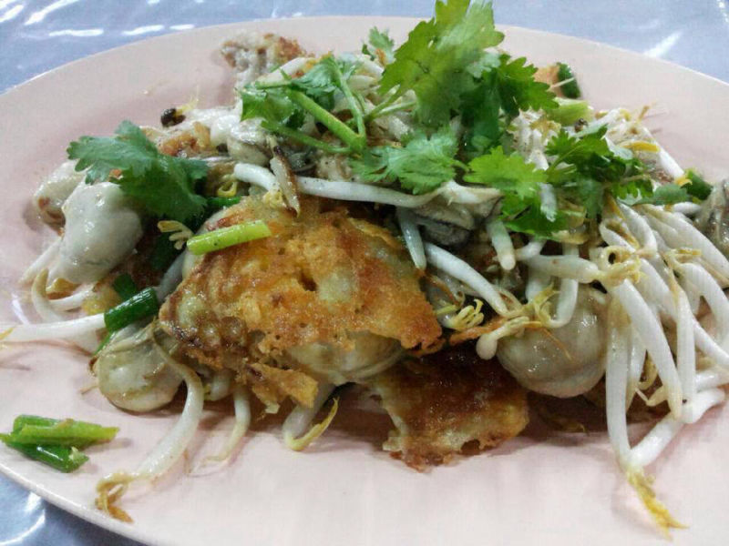
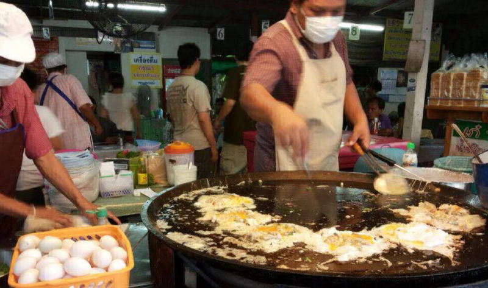

曼谷 “หอยทอดปราโมทย์ 鸭蛋蚝煎”
由于搞不懂这家摊位的招牌，加上这家摊位的特色是用鸭蛋来炒蚝煎，所以姑且称之为 “鸭蛋蚝煎”。
这家卖蚝煎的摊档设在曼谷郊外，离对泰国人民来说相当有名的 Wat Rai Khing 不远；更准确应该说是在 Wat Tha Phut 东南面Hwy3316路边的小摊子。（Wat 在泰语是庙宇的意思）
蚝煎这道美食在泰国有干 / 湿 2种做法，名称也不一样。如一般，这家摊档 2种做法都有卖。湿版的蚝煎，它的薯粉比较厚，保有烟烟韧韧的口感；泰语称之为 o-suan。而干版本的蚝煎，薄薄的薯粉煎得焦香酥脆，有点吃脆饼的口感；泰语称作 hoy-tod。因为用的是鸭蛋，因此这家出品的 2种蚝煎味道都特别浓郁。加上他家用的鲜蚝体型硕大肥美多汁是其他地方较少见着的。
不过，有些人接受不了太大颗的鲜蚝，还有就是觉得摊主下的豆芽有点过量，让这些蚝煎带有一些豆芽青涩的味道；个人而言倒觉得还不错，2种版本的蚝煎都各有特色，下次一定要提醒老板少下点豆芽，应该会更适合外地人的口味。
这家摊档除了蚝煎之外，也有虾仁煎或综合各种海鲜的海鲜煎。至于味道如何？由于没有尝试就不妄加评论了。
Posted on Sep 2014/2016
หอยทอดปราโมทย์
วัดท่าพูด Tambon Rai Khing, Amphoe Sam Phran, Chang Wat Nakhon Pathom 73210, Thailand
(Opposite Wat Tha Phut)
1700-2100